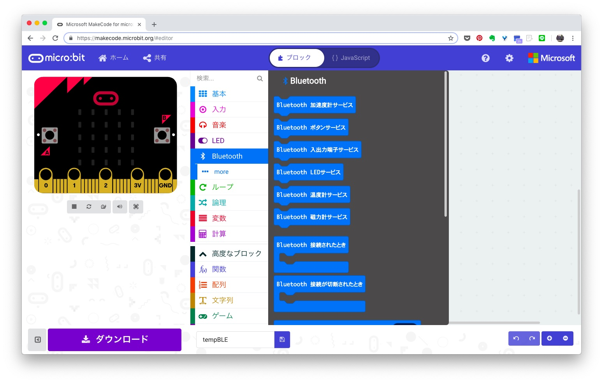

<!doctype html>
<html class="no-js" lang="">
<head>
<meta http-equiv="Content-type" content="text/html; charset=UTF-8">
<meta http-equiv="x-ua-compatible" content="ie=edge">
<meta name="description" content="micro:bit ble connect - LetsIoT">
<meta name="viewport" content="width=device-width, initial-scale=1">
<title>micro:bitで温度データをAmbientに送りグラフにする(コネクトモード編) - AmbientでIoTをはじめよう</title>
<link rel="shortcut icon" href="/favicon.ico" />

<link rel="stylesheet" href="https://maxcdn.bootstrapcdn.com/bootstrap/3.3.7/css/bootstrap.min.css" integrity="sha384-BVYiiSIFeK1dGmJRAkycuHAHRg32OmUcww7on3RYdg4Va+PmSTsz/K68vbdEjh4u" crossorigin="anonymous">
<link rel="stylesheet" href="https://maxcdn.bootstrapcdn.com/bootstrap/3.3.7/css/bootstrap-theme.min.css" integrity="sha384-rHyoN1iRsVXV4nD0JutlnGaslCJuC7uwjduW9SVrLvRYooPp2bWYgmgJQIXwl/Sp" crossorigin="anonymous">

<style>
    body {
        /* padding-top: 20px;
        padding-bottom: 20px; */
    }
    .navbar {
        margin-bottom: 60px;
        height: 140px;
    }
    .navbar-brand img {
        padding: 40px 0;
    }
    .footer {
        margin-top: 60px;
        background: #F7F7F7;
    }
    .footer ul {
        padding-top: 35px;
        padding-left: 0px;
        margin-left: 0px;
    }
    .footer li {
        line-height: 25px;
        padding-left: 0px;
        margin-left: 0px;
        list-style: none;
    }
    .footer a {
        color: #999;
        font-weight: bold;
    }
    .footer #copyright {
        clear: left;
        margin-top: 35px;
        margin-bottom: 20px;
    }
    .alert-info {
        margin-top: 70px;
        background-image: none !important;
    }
    h2 {
        margin-top: 40px;
    }
    .submenu li {
        margin-bottom: 6px;
    }
</style>
</head>
<body>

<div class="navbar navbar-default">
    <div class="container">
        <div class="container-fluid">

            <div class="navbar-header">
                <a class="navbar-brand" href="https://www.switch-science.com/">
                    
                </a>
            </div>

          </div>
    </div>
</div>

<div class="wrap">
    <div class="container">

        <div class="row">
            <div class="col-lg-8 col-sm-9 hidden-xs" style="margin-bottom: 20px;">
                <h1>AmbientでIoTをはじめよう</h1>
            </div>
            <div class="col-lg-8 col-sm-9 hidden-xs">
                <p class="text-right">2018年11月26日</p>
            </div>
            <div class="col-lg-8 col-sm-9 hidden-xs">
                <h1>micro:bitで温度データをAmbientに送りグラフにする(コネクトモード編)</h1>
            </div>

            <div class="col-sm-9 col-lg-8">
                <p>「AmbientでIoTをはじめよう」、第13回、第14回はmicro:bitを使って温度データをBluetooth Low Energy (BLE) で発信し、
                    ゲートウェイ経由でAmbientに送って、記録し、グラフ化(可視化)します。
                    第13回はmicro:bitとゲートウェイをBLEコネクトモードで通信する方法を説明します。
                    ブロードキャストモードでの通信は第14回「<a href="../microbit_bcst/">micro:bitで温度データをAmbientに送りグラフにする(ブロードキャストモード編)</a>」をご覧ください。</p>

                <p></p>

                <h2 id="microbit"><a href="https://www.switch-science.com/catalog/3735/">micro:bit</a></h2>

                <p>micro:bitはイギリスBBCが教育用に開発したシングルボードコンピューターです。
                    プロセッサーとしてARM Cortex-M0をベースにしたNordic nRF51822を搭載し、Bluetooth Low Energy (BLE) で通信できます。</p>

                <p>ボード上に25個のLED、2個のボタンスイッチ、加速度センサ、磁力センサが搭載されており、照度や温度を測ることもできます。
                    温度はプロセッサー内蔵の温度センサを使っています。</p>

                <p>今回はmicro:bit本体とケース、電池ボックスなど、始めるのに便利な部材が入った「<a href="https://www.switch-science.com/catalog/3736/">micro:bitをはじめようキット</a>」を使いました。</p>

                <p></p>

                <p>プログラミング言語としては、Microsoft Block Editor、MicroPython、JavaScriptなどが使えます。
                    Block Editorはビジュアルに機能ブロックを組み合わせてプログラムが書けます。
                    micro:bitとの親和性がいいので、今回はBlock Editorを使ってプログラミングします。</p>

                <h2 id="structure">全体の構成</h2>

                <p></p>

                <p>プロセッサー内蔵の温度センサを使って温度を測り、データをBluetooth Low Energy (BLE) で発信します。
                    Raspberry Pi Zero WHをゲートウェイにしてBLEでデータを受信し、<a href="https://ambidata.io/" target="_blank">IoTデータ可視化サービス「Ambient」</a>に送って、グラフ化します。</p>

                <p>プロセッサー内蔵の温度センサはプロセッサーの発熱の影響を受けます。
                    その影響を避けるため、<a href="../microbit_bcst/">ブロードキャスト編</a>ではBME280を使って温度などを測るバージョンも開発します。</p>

                <h2 id="prepare">micro:bitでBLEを使う準備</h2>

                <h3>Block EditorでBLEが使えるようにする</h3>

                <p>Block EditorでBLEを使うために、機能ブロックの中の「高度なブロック」 > 「拡張機能」を選択し、bluetoothを追加します。
                    Bluetoothはradio機能と同居できないので、radioを削除します。</p>

                <p></p>
                <p></p>
                <p></p>
                <p></p>

                <p>これでbluetoothが追加されます。
                    さらに「プロジェクトの設定」で「No Pairing Required: Any One can connect via Bluetooth.」を選択します。</p>

                <p></p>
                <p></p>

                <h3>Bluetooth機能ブロック</h3>

                <p>Bluetooth機能ブロックには、加速度、ボタン、温度計などのサービスと、「接続されたとき」、「接続が切断されたとき」といった条件、
                    「UIDをアドバタイズ」、「URLをアドバタイズ」、UARTでの文字の送受信などがあります。</p>

                <p></p>

                <h2 id="ble_mode">BLEデバイスの動作</h2>

                <p>BLEデバイスの通信にはコネクトモードとブロードキャストモードがあります。
                    詳細は「<a href="../blegw_rpi/#blemode">BLE環境センサ・ゲートウェイ(Raspberry Pi編)</a>」をご覧ください。</p>

                <p>コネクトモードは双方向通信なので、ゲートウェイからセンサ端末のデータを取得するだけでなく、センサ端末のモード設定をおこなうこともできます。
                    センサ端末は常にゲートウェイからのコネクトを待つため、消費電力が多くなりがちです。</p>

                <p>ブロードキャストモードは一方向通信です。センサ端末からデータを発信するには適した方式ですし、
                    5分に1回、10秒間だけブロードキャストするといった間欠動作をおこなうことで消費電力を低く抑えることも可能です。</p>

                <h2 id="connect_mode">コネクトモード</h2>

                <h3>micro:bit側のプログラム</h3>

                <p>「最初だけ」に「Bluetooth 温度計サービス」ブロックを入れると、温度計サービスが組み込まれます。
                    プログラムをダウンロードして動かせば、アドバタイズが始まります。
                    ゲートウェイなどのセントラル側でスキャンしてmicro:bitを見つけ、接続して温度データを読めます。
                    一般的にBLE通信では、サービスとキャラクタリスティクスを定義して、UUIDを付与し、
                    キャラクタリスティクスにread要求があった場合にセンサデータを返す処理を書く必要があります。
                    micro:bitで予め用意された温度、加速度などのサービスは、機能ブロックを「最初だけ」に入れるだけで必要な処理がすべて組み込まれます。</p>

                <p>これだけだとmicro:bitの動作が見えないので、「接続されたとき」に温度をLEDに表示し、「接続が切断されたとき」に悲しい顔マークを表示してみます。</p>

                <p></p>

                <p>このプログラムのhexファイルを作り、micro:bitにダウンロードします。ダウンロードが終わると、プログラムが動きます。</p>

                <h3>「BLE Scanner」で動作を確認する</h3>

                <p>動作確認にはスマホアプリ「BLE Scanner」が便利です。<p>

                <p></p>

                <p>BLE Scannerでスキャンすると、デバイスリストに「micro:bit [puzup]」が表示されます。
                    [puzup] の部分は端末によって異なるようです。</p>

                <p></p>

                <p>Connectすると、DEVICE UUIDなどの情報が表示され、micro:bitのLEDは温度の表示に変わります。</p>

                <p></p>

                <p><a href="https://lancaster-university.github.io/microbit-docs/resources/bluetooth/bluetooth_profile.html" target="_blank">micro:bitのBLEプロファイル</a>によれば、サービスとキャラクタリスティクスのUUIDは次のようになっています。</p>

                <div align="center">
                    <table class="table table-bordered" style="font-size:0.9em; width: 80%;">
                        <tbody>
                            <tr><td>ベースUUID</td><td>E95D<span style="background-color:#ffff00">0000</span>-251D-470A-A062-FA1922DFA9A8</td></tr>
                            <tr><td>温度計サービスのサービスUUID</td><td>E95D<span style="background-color:#ffff00">6100</span>-251D-470A-A062-FA1922DFA9A8</td></tr>
                            <tr><td>温度のキャラクタリスティクスUUID</td><td>E95D<span style="background-color:#ffff00">9250</span>-251D-470A-A062-FA1922DFA9A8</td></tr>
                        </tbody>
                    </table>
                </div>

                <p>UUIDの5桁目から8桁目までがサービスやキャラクタリスティクスによって固有の値に変わります。</p>

                <p>BLE Scannerで温度計サービスとその先の温度のキャラクタリスティクスを見ると、値が0x17(23℃)で、LEDにも同じ値が表示されています。</p>

                <p></p>
                <p></p>

                <p>これでmicro:bit側の動作は確認できました。次はゲートウェイ側です。</p>

                <h2 id="gateway">コネクトモードのゲートウェイプログラム</h2>

                <p>ゲートウェイは「<a href="../blegw_rpi/">BLE環境センサ・ゲートウェイ(Raspberry Pi編)</a>」で開発したものをベースにします。
                    Raspberry PiへのBLEライブラリのインストールなどは<a href="../blegw_rpi/">この資料</a>をご覧ください。
                    ゲートウェイはRaspberry Pi Zero WHを使いました。</p>

                <p>大まかな流れは次のようになります。</p>
                <ul>
                    <li>スキャンして、micro:bitのアドバタイジングデータを見つける</li>
                    <li>見つけたmicro:bitに対してスレッドを起動し、端末にコネクトする</li>
                    <li>周期的にデータを読み出し、Ambientに送信する</li>
                </ul>

                <p>まずスキャンしてmicro:bitを見つけます。
                    micro:bitのアドバタイジングデータはAdTypeが「Complete Local Name」、値が「BBC micro:bit [xxxxx]」です。
                    [xxxxx]の部分はボードによって変わるようです。そこで、[xxxxx]の部分を無視し、値が「BBC micro:bit」に前方一致したものを見つけます。</p>

                <script src="https://gist.github.com/TakehikoShimojima/a178d1d66bdf3044d0f11b6abbd55b60.js"></script>

                <p>端末を見つけたら、スレッドを起動し、端末にコネクトして、周期的にデータを読み出します。
                    温度のキャラクタリスティクスUUIDを指定してgetCharacteristics()し、read()すると温度データが取得できます。</p>

                <p>ゲートウェイプログラムはGithubに公開しました。</p>

                <ul>
                    <li><a href="https://github.com/AmbientDataInc/EnvSensorBleGw/blob/master/src/gw_RPi/env2ambientCS.py" target="_blank">AmbientDataInc/EnvSensorBleGw/src/gw_RPi/env2ambientCS.py</a></li>
                </ul>

                <p>micro:bitとゲートウェイのプログラムを動かすと、温度を測定し、ゲートウェイ経由でAmbientに温度データが送信され、グラフ表示されます。</p>

                <p>ブロードキャストモードは「<a href="../microbit_bcst">micro:bitで温度データをAmbientに送ってグラフにする(ブロードキャストモード編)</a>」をご覧ください。</p>

                <p style="margin-top: 40px;">この記事は<a href="https://ambidata.io/" target="_blank">アンビエントデーター</a>の下島が担当しました。</p>

            </div>

            <div class="col-lg-push-1 col-sm-3 col-lg-3 hidden-xs" style="margin-bottom: 40px;">
                <div style="float: left; margin-right: 10px;">
                    
                </div>
                <div style="overflow: hidden;">
                    <p>書いた人:下島健彦。<a href="https://ambidata.io" target="_blank">Ambient</a>開発者。アンビエントデーター代表取締役。</p>
                </div>
            </div>
            <div class="col-lg-push-1 col-sm-3 col-lg-3 hidden-xs submenu" style="margin-bottom: 40px;">
                <ul class="nav nav-pills nav-stacked">
                    <li class="open"><a href="index.html">13.micro:bitで温度データをAmbientに送りグラフにする(コネクトモード編)</a></li>
                    <ul class="list-unstyled">
                        <li><a href="#microbit">micro:bit</a></li>
                        <li><a href="#structure">全体の構成</a></li>
                        <li><a href="#prepare">micro:bitでBLEを使う準備</a></li>
                        <li><a href="#ble_mode">BLEデバイスの動作</a></li>
                        <li><a href="#connect_mode">コネクトモード</a></li>
                        <li><a href="#gateway">コネクトモードのゲートウェイプログラム</a></li>
                    </ul>
                </ul>
            </div>
            <div class="col-lg-push-1 col-sm-3 col-lg-3 hidden-xs submenu" id="backnumber">
            </div>
        </div>
    </div>
</div>

<div class="footer">
    <div class="container">
        <div class="row">
            <div>
                <h5>免責事項</h5>
                <p style="font-size:0.8em;">記事は実際に実験をおこなった上で書いていますが、動作を保証するものではありません。また本記事を利用したことにより生じる損害についてスイッチサイエンスおよびアンビエントデーターは一切の責任を負いません。</p>
            </div>
            <div class="col-xs-3">
                <ul>
                    <li></li>
                </ul>
            </div>
            <div class="col-xs-3">
                <ul>
                    <li></li>
                </ul>
            </div>
            <div class="col-xs-3">
                <ul>
                    <li></li>
                </ul>
            </div>
            <div class="col-xs-3">
                <ul>
                    <li></li>
                </ul>
            </div>
        </div>
        <div id="copyright">
            &copy; 2018 Switch Scinece, inc. &copy; 2018 AmbientData, Inc.
        </div>
    </div>
</div>

<script src="https://ajax.googleapis.com/ajax/libs/jquery/1.12.4/jquery.min.js"></script>
<script src="https://maxcdn.bootstrapcdn.com/bootstrap/3.3.7/js/bootstrap.min.js" integrity="sha384-Tc5IQib027qvyjSMfHjOMaLkfuWVxZxUPnCJA7l2mCWNIpG9mGCD8wGNIcPD7Txa" crossorigin="anonymous"></script>

<script>
    $(document).ready(function() {
        $('#backnumber').load('../backnumber.html');
    });
</script>

<!-- Global site tag (gtag.js) - Google Analytics -->
<script async src="https://www.googletagmanager.com/gtag/js?id=UA-4499733-1"></script>
<script>
  window.dataLayer = window.dataLayer || [];
  function gtag(){dataLayer.push(arguments);}
  gtag('js', new Date());

  gtag('config', 'UA-4499733-1');
</script>

</body>
</html>
